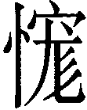
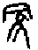
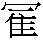
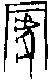
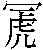
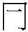
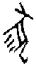
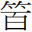
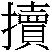

4 蒙卦 山水蒙
蒙，亨。匪我求童蒙，童蒙求我。初筮告，再三瀆，瀆則不告。利貞。初六，發蒙。利用刑人，用說桎梏，以往吝。九二，包蒙，吉。納婦吉，子克家。六三，勿用取女，見金夫，不有躬，无攸利。六四，困蒙，吝。六五，童蒙，吉。上九，擊蒙，不利為寇，利禦寇。
【卦名】
今本：蒙 帛書：蒙 歸藏：蒙 上博簡：尨 清華簡： 海昏：蒙
蒙原本是指一種草，也就是菟絲子，但假借為多義，通冡、矇、萌、尨。
《周易》中「蒙」主要做為童蒙的「蒙」，為幼稚無知之義。
蒙與冡、矇、萌
蒙也就是菟絲子，是一種寄生性的草本植物，這種草往往在宿主植株上呈覆蓋狀，因此稱「蒙」，從「冡」即取其「覆蓋」義。
《爾雅》：「蒙，玉女。」「唐，蒙，女蘿。女蘿，菟絲。」《說文》：「蒙，王女也，从艸冡聲。」段注說「王女」是「玉女」之誤。
蒙、唐、唐蒙、玉女、女蘿、菟絲，指的都是同一種植物，這也是蒙的原初意義。
但蒙後來多用以假借「冡」，覆蓋的意思。或者是「矇」字，不明事理、童矇之義。又通「萌」，萌芽、初生。
《說文》：「冡，覆也。从𠔼豕。」段注：「凡蒙覆，僮蒙之字今字皆作蒙，依古當作冡，蒙行而冡廢矣。艸部蒙，艸名也。」
「蒙」字《禮記》及《周禮》中多數作「覆蓋」，即取「冡」的本義，如「有餓者蒙袂輯屨，貿貿然來」。《詩經》、《左傳》也有此用法。例如「葛生蒙棘」、「胥臣蒙馬以虎皮」、「與婦人蒙衣乘輦」。
但甲骨文學者對於蒙（冡）字的字源看法相當紛歧，因甲骨文中並無𠔼下有豕的文字，但有𠔼下有隹（），以及𠔼下有虎等字。
徐中舒《甲骨文字典》將（）釋為「冡」：
從𠔼從隹。郭沫若謂當是冡字之異。《說文》：「冡，覆也，𠔼豕為蒙。」𠔼隹亦蒙意也。蓋假為雺若霧。（《卜辭通纂》）于省吾從其說，更謂冡為古今字。從佳𠔼聲，某種鳥名，預知將霧，古隹鳥無別，故從隹。（《甲骨文字釋林》）。
于省吾《甲骨文字釋林．釋》，將「」解為「霧」：「為霧之本字，霧為後起字，霧行而廢。」「總之與霧是古今字。甲骨文的字讀作霧，于文義咸符。是以佳為形符，以𠔼為聲符，的形聲字。」于省吾還認為，之所以從佳（同鳥），是因為某種鳥具有預知將霧的能力，因此從隹。
事實上霧與冡字也可互通。《說文》：「霚，地气發，天不應。从雨敄聲。」「雺，籒文省。」段玉裁注曰：「霚今之霧字。《釋天》曰：『地氣發，天不應，曰霧。』霧者俗字。霧一本作霿，非也。《釋名》曰：『霧，冒也。』氣蒙冒覆地之物也。」「《洪範》『曰蒙』古文《尙書》作『曰雺』，徐邈音亡鉤反，《宋世家》作『曰霧』，霧卽霚，霚者雺之小篆。」古冡、霧相通，霧是地氣冒出並覆蓋地面的東西，兼具冒出與覆蓋之意。
劉興隆《新編甲骨文字典》則以（）為冡，引胡厚宣看法認為，冡下的豕字應是虎之誤，為古代勇士披戴虎皮做偽裝之意。竊疑，《左傳》「胥臣蒙馬以虎皮」是否和此字有關？
「冡」字的情況讓人想到「臽」（陷），依于省吾的看法，臽字下方的「凵」為「坎」的古字，「臽」與「坎」相通，其甲骨文字有很多變形，但基本上都是下為凵，是用來做為人牲或犧牲之祭的大坑洞，如果祭祀用的是人，坑洞上畫的就是一個人，若用的是狗就畫狗，另外還可能用豬、鹿等等。隨著文字演變，後來只存從人的「臽」字。
牢的甲骨文也有類似的情況，若宀裡畫的是牛就是圈養牛，畫的是羊就是圈養羊。
冡字或許要表達的就是把某某動物覆蓋起來的意思，當然，這個覆蓋或許是有什麼特殊的宗教意義。就如臽是把人或動物推入坑中祭祀用，而牢則是把牛或羊圈養起來準備要拿去做犧牲之用。
但無論如何，「冡」字從從豕有易象上的意義，艮為養為門闕，坎為豕，所以蒙卦就是養豬之象，亦為覆豕之象，也就是「冡」字的形構。
將動物覆蓋起來，或許有不讓人看到，不讓人知道的意思，所以蒙又引申為蒙蔽、蒙騙、欺蒙之義。反過來，人如果因為東西蓋起來就被欺蒙了，代表很容易受騙，且看不到事物的真相，那麼就是蒙昧，也就是蒙卦的卦義了。
至於蒙做童蒙、萌芽的意義，或許是與「萌」字同音的假借。鄭玄：「蒙，幼小之貌，齊人謂萌為蒙也。」此說可為佐證。也可能是冡與霧相通，除覆蓋之外兼取其冒出之義，物之冒出即初生、萌芽。
高亨則認為蒙為矇的假借。
《說文》：「矇，童矇也，一曰不明也。」段注：「此與周易童蒙異，謂目童子如冡覆也。毛公、劉熙、韋昭皆云：有眸子而無見曰矇。」《說文》「童矇」指的是瞳子被蒙蔽，眼睛被遮起來了當然看不見東西，比喻人不明事理。段注強調這與《周易》「童蒙」不同意思。矇指的是人的眼珠子受到冡蔽而無法見物，童蒙（矇）則是年幼無知的意思。當然，矇的引申義與童蒙的蒙也是互通的。
蒙與尨
上博簡卦名作尨，音忙，古音通蒙。《說文》：「尨，犬之多毛者。」段注：「《釋嘼》、《毛傳》皆曰：『尨，狗也。』此渾言之，許就字分別言之也，引申為襍亂之偁。」清華簡做「」，可能是尨字之假借。
尨甲骨文作，象肚子長有長毛的狗。楷書從犬從彡，彡像毛多而長。依段注，此字引申為雜亂的意思。
比對蒙字原意為菟絲子，其生長也是相當雜亂。或許該卦卦義在於表示事物雜亂無章，蔓延而無以掌控之狀。《雜卦傳》則說：「蒙雜而著。」此「蒙」即是取「尨」的字義。
依《說卦》，艮為狗，如果是以上艮取象為狗，那麼下坎可能取象為毛髮或駁雜。既濟六二虞翻注曰：「坎為玄雲，故稱髮。」或可為證。
另有學者認為，尨字與蒙同，因此尨為蒙之假借。
《爾雅》：「蒙，荒，奄也。」《說文》：「荒，蕪也。」「一曰草掩地也。」「奄，覆也，大有餘也。」段注：「荒之言尨也，故為蕪薉。」「荒，奄也，此艸掩地引伸之義也。」「弇，同也，弇，蓋也。古奄弇同用，覆蓋同義。《詩》『皇矣』傳曰『奄大也』，『執競』傳曰『奄同也』。《鄭箋詩》奄皆訓覆，許云『覆也，大有餘也』，二義實相因也。覆乎上者往往大乎下，故字从大。」桂馥《說文解字義證》認為「弇，同也」應作「弇，也」，通冒，為覆蓋的意思。
因此蒙、荒、奄互通。
綜合以上資料，荒即荒蕪，尨雜，雜草淹地之狀，通尨。奄同掩、揜，覆蓋、掩蓋之義，亦通冒。蒙一方面為覆蓋之義，二方面因蒙草覆蓋為雜亂、荒蕪而缺少治理之現象，因此又通荒蕪、尨雜。
【卦義】
幼稚不懂事，昏昧無知，荒蕪而有待開發。
蒙為「啟蒙」的蒙，繼屯卦而來，表示天地初開之後的草昧狀態，在人則比喻小孩幼稚而不懂事的階段，在政為民智未開，在事則象徵荒蕪而有待開發與治理。
《序卦》：「物生必蒙，故受之以蒙，蒙者物之稚也。」再加上卦辭講「童蒙」，蒙的意思很清楚，即是矇昧，引申為幼稚而無知。啟蒙，就是啟發蒙昧的人讓他明白事理。就卦序而論，蒙為繼屯而來，並與屯卦為相綜的一對卦。屯為物初生未伸展之狀，而蒙（萌）則是萌芽而初生，幼稚而未壯，於人則是指孩童。屯是初生而難，蒙是年幼而無知無能。即鄭玄所說：「蒙，幼小之貌。齊人謂萌為蒙也。」屯為屯墾，為建立諸侯，君子經綸治理的時候；蒙則是開發荒蕪，啟發民智以養聖功。
卦象為山下出泉，泉是剛從地面冒出的水源，有如初開之民智。但剛從山下冒出的泉水並沒有一個定向，隨處亂流，雜亂無章，因此待君子之開發善導。坎為法為正，上艮養之，因此也是君子養正之象，《彖傳》所說的「蒙以養正，聖功也」。
內水險、外艮止，險而後止。處蒙卦之時，能力不足以應付危險，面對危險而停下。卦辭言「童蒙求我」，若能求教於有智慧、有經驗的長者則是最好的策略。相反的，蹇卦為止於險前，在危險未到之前就已知有危險而停止，一智一愚，形成對比。
得蒙卦，應知自己處事能力有限，不足以擔大任，而能求教於有能力之人。但求問於人應當誠心，避免繁瑣而亂問，所以卦辭說「初筮告，再三瀆，瀆則不告」，同一事若一問再問，不反求諸己心，一味外求，那就是褻瀆，褻瀆則不告，亦有違啟蒙之道。
鄭玄：「弟子初問，則告之以事義。不思其三隅相況，以反解而筮者，此勤師而功寡，學者之災也。瀆筮則不復告，欲令思而得之，亦所以利義而幹事是也。」再而三的反覆問，是「勤師寡功」，孔子說的「學而不思」。
王弼曰：「此一卦，陰爻亦先求陽。夫陰昧而陽明，陰困童蒙，陽能發之。凡不識者求問識者，識者不求所告；暗者求明，明者不諮於暗。故童蒙求我，匪我求童蒙也。故六三先唱，則犯於為女。四遠於陽，則困蒙吝；初比於陽，則發蒙也。」陰為蒙昧者，陽為能啟蒙昧者，因此爻的吉凶應當以有沒有得到陽爻的救濟做為判斷。
蒙，亨，匪我求童蒙，童蒙求我。初筮告，再三瀆，瀆則不告，利貞。
- 《彖》曰：蒙，山下有險，險而止，蒙。蒙，亨，以亨行，時中也。匪我求童蒙，童蒙求我，志應也。初筮告，以剛中也。再三瀆，瀆則不告，瀆蒙也。蒙以養正，聖功也。
- 《象》曰：山下出泉，蒙，君子以果行育德。
- 《序卦》：物生必蒙，故受之以蒙，蒙者物之稚也。
- 《雜卦》：蒙雜而著。
- 《禮記‧表記》：子曰：「無辭不相接也，無禮不相見也，欲民之毋相褻也。《易》曰：『初筮告，再三瀆，瀆則不告。』」
- 帛書《謬和》：今周易曰：蒙，亨。非我求蕫蒙，蕫蒙求我，初筮吉，再參讀，讀則不吉，利貞。以昌之和（？），以為夫設身无方，思慮不察，進很无節，讀焉則不吉矣，而 能享其利者，□□向又治其□□□□可也，而又不然者。夫內之不咎，外之不逆，然能立志於天下， 若此者，成人也。成人也者，世无一夫，剴可強及輿才？故言曰：古之馬及古之鹿，今之馬今之鹿。夫任人□□□□□之失。呂昌曰：若子之言，則易蒙上矣。子曰：何必若此，而不可察也。夫蒙者， 然少未又知也。凡物之少，人之所好也。故曰：蒙，亨。非我求童蒙，童蒙求我者，又知能者，不求无能者，无能者□□□［求又能者］。故［曰］：非我求童蒙，童蒙求我，初筮吉者，聞其始而知其冬，見其本而知其［末。故］ 曰初筮吉， 再參讀，讀則不吉者，反覆問之而讀，讀弗敬。故曰不吉。弗知而好學，身之賴也，故曰利［貞］。 □君子於仁義之道也。雖弗身能，剴能已才！日夜不休，冬身不卷，日日（？？）載載，必成而后止。故易曰：蒙，亨。非我求童蒙，童蒙求我，初筮吉，再三讀，讀則不吉，利貞。此之胃也。
【今解】
蒙昧不懂事，良好的匯聚。不是我去求童蒙之人，而是童蒙不懂事的人來求我。第一次的筮問會告訴你答案，同一件事再有第二次、第三次的筮問，那麼就是褻瀆，褻瀆則不會告訴你答案了。利於貞定。
【字義】
匪我求童蒙，童蒙求我：不是我去求童蒙不懂事的人，而是童蒙不懂事的人有事求教於我。古代有事問卜問筮時，是問筮的人去找卜筮先生，而不是卜筮先生去找問卜的人。匪，非也。童，通解以童為兒童，《孫氏周易集解》引《公羊疏》：「人幼稚曰童，未冠之稱。」童也可能是指為奴之罪人。《說文》：「男有辠曰奴，奴曰童，女曰妾。从䇂，重省聲。」劉興隆《新編甲骨文字典》：「象頭有曾受鯨刑標誌，是有足械之童奴形。是一幅生動之畫圖。釋童，與後世僮僕之僮通用。」古代有罪的奴隸名為「奴」，男奴叫「童」，女奴叫「妾」。「童蒙」或指被冡覆起來（例如被蓋上頭罩）的童奴，初六談到刑法之執行，因此以童為童奴符合爻辭所談之情境及脈絡。只是《周易》經文所言過於精簡，細節已不可得。童又經常借為「瞳」，如《說文》：「矇，童矇也，一曰不明也。」許慎說的「童矇」即「瞳矇」，眼瞳子被冡覆而看不到的意思，所以又說「一曰不明也」，比喻人不明事理。
初筮告，再三瀆，瀆則不告：第一次來問筮會詳實以告。但再一次、第三次，一問再問，則是褻瀆，褻瀆就不再告知。《禮記．表記》：「子曰：無辭不相接也，無禮不相見也，欲民之毋相褻也。《易》曰：初筮告，再三瀆，瀆則不告。」鄭注：「瀆之言褻也。」「瀆」或作「黷」，崔憬曰：「瀆，古黷字也。」《說文》：「黷，握持垢也，从黑賣聲。《易》曰：再三黷。」帛書本作「初筮吉，再參，即不吉」。吉與告可能因形近而誤，但亦可能「告」當作「吉」，那麼此段意思為初次問筮得此卦為吉，若是第二次或第三次問卦，那麼就是褻瀆，褻瀆就不吉。
筮：上古問事分卜與筮，卜是取龜鑽鑿之後再燒灼，燒灼之後的裂紋兆象解讀吉凶。筮則是用蓍草演算，算出卦象之後再以卦象來看吉凶。《周易》所使用的即是筮法。筮亦可引申解釋為「問」，鄭玄：「筮問也，瀆褻也。弟子初問，則告之以事，義不思其三隅。相況以反解而筮者，此勤師而功寡，學者之災也。瀆筮則不復告，欲令思而得之，亦所以利義而幹事是也。」
山下出泉，蒙，君子以果行育德：王弼：「山下出泉，未知所適，蒙之象也。果行者，初筮之義也。育德者，養正之功也。」
初六，發蒙，利用刑人，用說桎梏，以往吝。
- 象曰：利用刑人，以正法也。
【今解】
啟發蒙昧，宜於用刑罰之官來嚴懲，但也當適時脫去桎梏。若一味以刑罰直往而行，將有恨惜。桎梏為刑具，比喻人之蒙昧。用脫桎梏，比喻人之脫蒙。
另一說則主張當用刑罰。以草昧而民智未開之時，就應當嚴加治理，切忌姑息養奸，宜於使用刑罰作為警戒。如果這時縱容罪犯，任其發展，則未來會有吝。
【字義】
發蒙：發原始的意思是射箭、發射。此處可有兩種解釋。一是明，即啟發的意思。讓人從蒙昧無知變為明白事理。《爾雅. 釋言》：「愷悌，發也。」釋曰：「謂發明而行也。」二，依王弼當解釋作發去、去除。發蒙為去除人的蒙昧，讓童蒙者脫去無知。孔穎達：「明能照闇，故初六以能發去其蒙也。」于省吾則認為「發蒙」當為「法蒙」，並以《象傳》「以正法也」互證。（《易經新證》）此爻爻辭所講為執法之事，蒙為覆為受，「法蒙」即伏法之義。
利用刑人：宜於使用刑罰之官。刑人，用刑之人，執行刑罰的官員。《周禮》掌管一事者稱「人」，如庖人、亨人、膳人。《象傳》說：「利用刑人，以正法也。」以刑罰端正法律。虞翻：「坎為法，初發之正，故正法也。」
用說桎梏：說為「脫」，即除去、脫去。桎梏為刑具，腳鐐和手銬。用說桎梏，有兩種解讀：一、用以脫去刑具，釋放罪犯的意思。前言說「利用刑人」，既然應當使用刑罰，那麼釋放罪犯而不用刑罰，當然就不利，所以說「以往吝」。二、指的是刑人的用刑之道，能夠寬柔為懷，目的是要脫去人之桎梏，而不是要刑罰於人。以往吝的以往，則指嚴刑竣罰。坎為桎梏，爻靜則承陽比應，為刑人而發蒙之象（初為始）。爻動下卦成兌，兌為脫，桎梏脫去之象。虞翻：「坎為穿木，震足艮手，互與坎連，故稱桎梏。初發成兌，兌為說，坎象毀壞，故曰用說桎梏。」傳統解釋多數認為，桎梏比喻人之蒙昧，用脫桎梏講的是脫去蒙昧，後言「以往吝」講的則是則是刑罰、桎梏不當長期使用。王弼：「蒙發疑明，刑說當也。以往吝，刑不可長也。」程頤：「治蒙之初，威之以刑者，所以說去其昏蒙之桎梏。桎梏謂拘束也，不去其昏蒙之桎梏，則善教无由而入。」
以往吝：吉凶悔吝為易經中常見的斷辭。悔是後悔，有悔改之意，因此傾向於「自凶而趨吉」，介於吉凶之間，但若能悔改則可變為吉。吝則為惋惜，《説文》「吝，恨惜也」。吝亦介於吉凶之間，有「自吉而轉凶」的可能，未至於凶，但若順其發展則可能變為凶。「以往吝」亦可作「以往遴」，遴為「行難」，行走困難。《說文》：「䢯，行難也。从辵㷠聲。《易》曰：以往䢯。」
九二，包蒙，吉。納婦吉，子克家。
- 象曰：子克家，剛柔接也。
【今解】
包容童蒙，吉。娶媳婦吉，兒子能夠承擔家庭責任。
具有包容及中庸之美德。問婚姻大吉，適於娶媳婦。有能幹的兒子能夠幫助持家。
九二下卦坎中，剛中而應於六五，為蒙卦主爻。蒙卦諸陰爻為有待啟發的童蒙，九二則是啟發童蒙者，童蒙所求教者。剛中而居下，變而成坤，坤地為包容、廣生，因此為動而能有容之象。與六五應，故納婦吉。剛中，故克家。
【字義】
包蒙：包為包容。包蒙，包容他人之蒙昧。初九為發蒙者，以嚴刑峻罰啟發蒙昧。九二包蒙者則是以包容之心對待蒙昧。虞翻以包為「包養」，包蒙為九二一陽包養初、三、四、五等四陰，注曰：「坤為包。應五據初，一與三四同體，包養四陰，故包蒙吉。」「包蒙」或作「彪蒙」，鄭玄：「包當作彪，彪，文也。」彪為虎皮之紋，引申為紋路、文彩。「彪蒙」原義或指以虎皮為覆蓋、偽裝。《說文》：「包，象人褢妊。巳在中，象子未成形也。」（按：巳與子古文同。褢同懷。）段注：「妊者孕也。子部曰：孕者褢子也。引伸之為凡外裹之偁，亦作苞，皆假借字。」包原義為象人懷孕的樣子，為今之「胞」的本字。那麼「胞蒙」可解釋為懷孕的意思。因女子會懷孕生子，因此宜納為婦，故納婦吉。
納婦吉，子克家：納婦即取媳婦。《爾雅．釋親》「子之妻為婦」，又曰「弟之妻為婦」。因「納婦吉」後文有「子克家」，因此此處「納婦」應是指為子娶妻。「納婦吉，子克家」言為子娶媳之後，子成家立業，終能承擔家庭責任。另一解釋，女子嫁人之後則為婦。則所納之婦為已婚者，如《左傳》成公二年「莊王欲納夏姬」，夏姬已為人婦，莊王再納之。
六三，勿用取女，見金夫，不有躬，无攸利。
- 象曰：勿用取女，行不順也。
【今解】
不宜娶妻。因女子見到有錢男人就失身，這女的沒什麼好的。
象曰「行不順也」意指女子行為不端正，所以不要娶女。不順指的是六三乘九二。六三失位，乘九二又與上九相應，為近逆而遠應，女子不安於室。
【字義】
勿用娶女：不宜娶女。因為女子品行不佳，拜金而不自愛。取，同娶。
見金夫，不有躬：言見到有錢的男子就失身。程頤：「女之從人，當由正禮，乃見人之多金，說而從之，不能保有其身者也，无所往而利矣。」金即金錢。金夫，有兩種解釋。一、多金、有錢的男人，或指以金錢誘惑女人者。二、剛強，金為剛強之物，金夫為剛強之夫。王弼：「見剛夫而求之，故曰不有躬也。」躬，即身。不有躬，就是失身。高亨對這兩句有另一解釋，並讀為「見金，夫不有躬」，以「金」為「匳金」，即冥紙。「夫不有躬」，夫喪命。意思為，女子剋夫，娶她之後丈夫會被剋死，準備燒冥紙，所以勿用取女。
无攸利：無所利。攸為所，利為宜、好、利益、好處。無攸利即無所好，無所宜，無所利。
六四，困蒙，吝。
- 象曰：困蒙之吝，獨遠實也。
【今解】
受困於蒙昧，有吝。
四為多懼多凶之位，又互體為坤，四居坤之中，為蒙昧小人為伍而遠君子之象。陽代表光明與君子、大人，是能夠啟發與救濟童蒙者，蒙卦四個陰爻唯獨四與陽爻無所接觸，亦無比應，因此稱「困蒙」。象曰：「困蒙之吝，獨遠實也。」唯獨六四遠離君子。實，即陽。
六五，童蒙，吉。
- 象曰：童蒙之吉，順以巽也。
【今解】
天真之童蒙，吉。
由於能保有赤子之心，純真而自然，雖蒙昧，但吉人自有天相，傻人有傻福。
六五以柔處中，下與九二相應，上承上九，變而上卦成巽，巽為謙遜之象，又居互體坤卦之中，故象曰：「童蒙之吉，順以巽也。」處蒙之時，具有柔順中庸而卑下之德性，能夠為兩個陽九所救濟，是童蒙之吉者。
虞翻以艮為童。除蒙卦之外，再如觀初六童觀，大畜六四童牛之牯，皆以艮為童。虞翻：「艮為童蒙，處貴承上，有應於二，動而成巽，故吉也。」
【字義】
童蒙：小孩的無知與幼稚乃為天然，是一種天真無邪。此言問事者的無知有如孩童之天真，是「天然呆」，所謂「傻人有傻福」，因此為吉。
上九，擊蒙。不利為寇，利禦寇。
- 象曰：利用禦寇，上下順也。
【今解】
打擊童蒙，但不宜當盜賊做不義事，宜於抵禦盜賊。
上九已經是蒙卦最後階段，應該走出無知蒙昧，打破童蒙的無知，一切應化為主動。但不能當盜賊去做不義之事，反而應該積極打擊盜賊。又上九為陽剛，因此具有打擊童蒙之力。
【字義】
擊蒙：打擊、擊破蒙昧。有覺醒之意。蒙或作蒙蔽，擊蒙為突破蒙蔽，有揭開真相之義。
不利為寇：告誡過猶不及。擊蒙不能太過，打擊蒙昧以至於過於殘暴，則變成「寇」。「利禦寇」因為師出有名，因此大家同心一意，所以象曰「利用禦寇，上下順也」。但禦寇也不應太過，手段不能過於殘暴或以暴制暴，以至於自己也變成盜匪。
【彖傳注】
蒙，山下有險，險而止，蒙。蒙，亨，以亨行，時中也。匪我求童蒙，童蒙求我，志應也。初筮告，以剛中也。再三瀆，瀆則不告，瀆蒙也。蒙以養正，聖功也。
蒙，亨，以亨行，時中也：解釋經文「蒙亨」。蒙卦之所以亨，因為以亨行，時中。這是以主爻來解釋蒙卦。主爻乃一卦之主，符合亨行、時中描述的只有九二。蒙為乾坤旁通成未濟過程所產生的卦，先是乾三至坤上成履和剝，再由履九五與剝六二交換成睽與蒙，因此蒙卦主爻九二乃是由履九五而來，履九五至剝二成蒙卦就是亨行與時中。荀爽：「此本艮卦也。」是以蒙卦為艮卦九三降二而來。
匪我求童蒙，童蒙求我，志應也：坎為志，志應指六五應於九二之志。艮為童蒙，我為九二。蒙卦乃童蒙求明之卦，九二為陽為明。
初筮告，以剛中也：筮為以蓍草求問於神明。剛中指的是九二。初次筮問則神明有所告，因為九二剛中陽明，初六與九二比應。
再三瀆，瀆則不告，瀆蒙也：六三不當位，又乘九二之剛，乃褻瀆之象。瀆蒙，褻瀆蒙道。
蒙以養正，聖功也：解釋經文「利貞」，言蒙卦當養正，乃符合聖人之功。艮卦在外為養，坎為律為正。《彖傳》以「眾正」釋「師貞」。蒙為養正之象，師則是眾正之象。五多功，九二與六五應。
請站長明示。
“六五以柔處中，下與九二相應，上承上九，變而上卦成巽”此處六五如何能變爻，依據何在，我不是很清楚，不知道站長能否明示一下。
請參考
關於爻變，請參考爻象全攻略一文。
至於其主要依據，研究春秋筮例一爻變的占例
可看到筮史的確會取爻變之象。但此法後來象數派用得很泛濫，所以要節制。
追問
就是之前與站長所見略同，認為對爻變還是要慎重。所以在這裡六五變而成巽，是因為「童蒙之吉，順以巽也。」這句話而爻變，還是依據什麼規則可以爻變成巽，故而象曰：「童蒙之吉，順以巽也。」對於這個規則，哪裡可變哪裡不可變，恕在下愚鈍還是不大明白。
或者就是按照既濟定的規則麼？
或者就是按照既濟定的規則麼？
與占法有關
這與周易占筮法有關，占筮法關乎卦爻辭最早的基礎文字資料如何形成。
當你揲蓍得到的數（由下而上）是878, 867時，在蒙卦第五爻出現了占數六，所以就要以蒙卦的第五爻「六五」來占解。
接著筮史就會以六五這個爻為核心去取八卦卦象。第一個象就是上卦的艮。接著也可能取六五爻變之後的象，就是巽....。如果六或九出現在三、四爻的位置，他可能還會取互體的八卦。但是當你在看六五爻的象時，你不能用六四去爻變。
可能没说清楚
站長你說的關於占筮法我是懂的。
可能我表達得不是太清楚，我的意思是你在解釋這個卦的每一爻時，都沒有說爻變，為何唯獨在六五這裡要爻變成巽？
象曰：順以巽也
象曰：童蒙之吉，順以巽也。
看来我这个童蒙真是愚钝啊。
那么按照站长的解释，显然这里的爻变是因为象曰：童蒙之吉，順以巽也，故此在这里爻变。也就是站长说的在象传里还是有多处由爻变引起的爻辞。只是不知道的是，这些象传里关于爻变的内在依据是什么？为什么不是所有的卦爻都变，而只是这几处？另外，在需卦的解说里“九二變為離，成黃離之中，為元吉，故曰終吉”，这里为何可以爻变为离，而且这里没有象曰来支持这个爻变？这里爻变的依据又是什么？
不可為典要，唯變所適
《繫辭》：上下无常，剛柔相易，不可為典要，唯變所適。
周易每段經文所談的是什麼象，都不一定。
那一字那一句會怎樣取象也不一定。
所以我們必需去探索有那一些象是正確而有意義的。像反對卦的卦象，我的研究認為沒有這種象，就不會去用。但像上下體、爻變、互體，我們都確定是有的。
我們在解經時，就會根據所知的各種原理去做嘗試。就這樣而已。
我們既然已經確定有這個原理，有這個卦象卦理，那麼隨時隨地都可運用在每個卦爻與經文的應用上。
除了這裡，還有需卦，其他任何地方你當然也都可以用。所以重點在於周易有沒有這種象？有的話，你隨時隨地都可用用看。但重點是要用經文來驗證。
谢谢站长费心解答！
谢谢站长费心解答！
勘誤
“告戒過猶不及”中“戒”似應為“誡”。
勘誤
蒙，亨，以亨行，時中也："先是乾四至坤上成履和剝"中，"四"應為"三"。
“于省文則認為”應為“於省吾”。
“于省文則認為”應為“於省吾”。
“于省文則認為”應為“于省吾”。
简繁转换错误了。